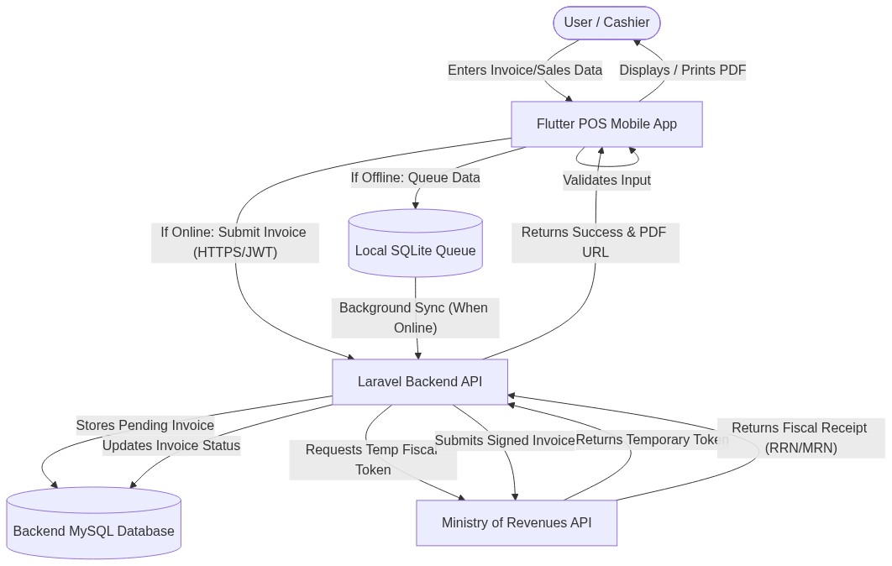
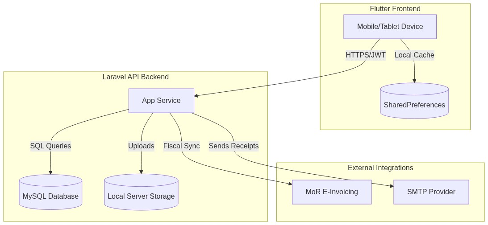
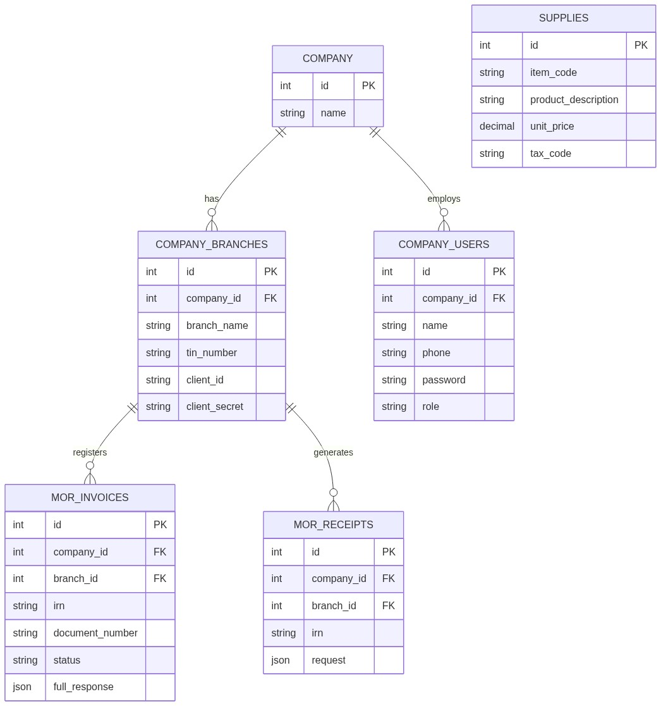

Application Version: v1.0.6+7
Prepared By: Information Network Security Administration (INSA) 2026
Submitted by: Micro Sun and Solutions PLC (MSS)
Submitted to: Information Network Security Administration (INSA)
Date: September 2026
Micro Sun and Solutions PLC (MSS) is an IT company founded in January 1997, specializing in hardware and network solutions. We offer customized solutions tailored to various industries, including government, banking, and telecom. We focus on high-quality software development and implementation, providing comprehensive corporate solutions across multiple sectors. Our company emphasizes 100% customer satisfaction and aims to deliver quality products and services at an affordable cost.
This document provides an overview of the Web and Mobile Application Security Testing Requirements Document, compiled for the Information Network Security Administration (INSA). The application in scope is the Deresegn Point of Sale (POS) and SaaS Application, which integrates with the Ethiopian Ministry of Revenues (MoR) e-invoicing system.
The owner of this document is the Deresegn Engineering and Compliance Department.
The scope encompasses the security mechanisms, architectural layouts, and data flows of the Deresegn POS/SaaS application: - The Flutter-based mobile client interfaces. - The Laravel 8 (PHP) backend REST API. - The local SharedPreferences storage handling offline queuing. - The integration with the Ministry of Revenues (MoR) e-invoicing API.
The objective of requesting this security certificate is to comply with the national cybersecurity mandates established by the Information Network Security Administration (INSA). Obtaining this certification ensures that the Deresegn Point of Sale (POS) and SaaS Application meets the rigorous security, integrity, and confidentiality standards required before public rollout and handling sensitive MoR fiscal data.
The following legal prerequisites and administrative documents are mandatory prior to the finalization of the INSA audit: 1. Updated Trade License: [Placeholder for Trade License ID] 2. TIN Number or National ID: [Placeholder for TIN Number] 3. System/Product Patent Certificate (if available): [Placeholder for Patent]



Key Entities and Definitions:
- COMPANY & COMPANY_USERS: COMPANY represents the master tenant. COMPANY_USERS contains name, phone, password, and role.
- COMPANY_BRANCHES: Represent the physical stores tied to a company. They contain the critical tin_number, client_id, and client_secret (encrypted via model casts).
- MOR_INVOICES: The central fiscal transactional record. Holds irn, document_number, status, and the full_response (JSON). Tied to both a Branch and a Company.
- MOR_RECEIPTS: Represents actual payments synced with the MoR.
- SUPPLIES: Represents inventory items, holding item_code, unit_price, and tax_code.
Authentication utilizes unique Phone Numbers and Passwords tied to specific Company IDs.
The application relies on users to set their password during registration or account creation. There is currently no mechanism that forces a user to change their password upon their first login.
Each user registers with a unique Phone Number. The system relies on administrative procedures to discourage the sharing of accounts between cashiers.
Users are expected to keep their credentials confidential.
The backend API enforces a minimum password length of six (6) characters during registration and login. Passwords are mathematically hashed exclusively using Laravel's native Bcrypt implementation (Hash::make). There are no programmatic requirements for special characters, numbers, or mixed casing.
The application does not currently enforce password expiration or rotation. Passwords remain valid indefinitely unless manually changed by the user or an administrator.
Password history is not tracked in the database. Users are permitted to reuse old passwords if they choose to change them.
If a user submits an incorrect password, the API returns a standard 401 Unauthorized response. The mobile app's AuthInterceptor._isAuthOrPublicEndpoint() exempts the following paths from auto-logout token clearing routines: /api/company/login, /api/branch/login, /api/company/register, /api/login, /api/companies, any path containing /verify, and any path containing /resend-otp. This ensures that user-entered credentials in input fields are preserved for convenient correction rather than forcefully flushed.
When consecutive invalid authentication attempts trigger server-side rate limits (returning HTTP 403 Forbidden or HTTP 429 Too Many Requests with messages such as "Too many login attempts. Please try again in 29 minutes."), the mobile application's AuthController.handleLockoutIfPresent() dynamically parses the remaining cooldown duration.
1. Duration Parsing: Uses regular expression (\d+)\s*(minute|min|second|sec|hour|hr)s? (case-insensitive) to extract the cooldown value. Accepts hours, minutes, and seconds (including short forms hr, min, sec) and plural forms. If no match is found, defaults to 1800 seconds (30 minutes).
2. Timestamp Persistence: Persists the exact cooldown expiry epoch (milliseconds) in secure storage via ConfigPreference.saveLockout() under keys auth_lockout_expiry and auth_lockout_message. The countdown is restored across app restarts via AuthController._restoreLockoutIfActive() called during onInit().
3. Interactive UI Countdown: A prominent red security alert banner displays a real-time countdown timer (Locked: MM:SS for durations under 1 hour; HH:MM:SS for longer durations).
4. Submission Lock: The login submit button is programmatically disabled until the countdown finishes, systematically mitigating automated brute-force and credential-stuffing attacks.
The JWT Time-To-Live (TTL) is configured to expire after 60 minutes. Once the 60 minutes elapse, the token is invalidated and the user must re-authenticate.
api.deresegn.com:network_security_config.xml with system-only trust anchors (blocking user-installed CAs such as Burp Suite or Charles Proxy) and SHA-256 pin-sets.IOHttpClientAdapter and SslPinningService to validate the SHA-256 fingerprints of certificates presented during TLS handshakes, dropping any tampered connections immediately.client_secret, api_key) in the company_branches table are encrypted at rest using Laravel's model casting mechanism (encrypted). On the mobile client, all tokens and keys are encrypted via flutter_secure_storage (AES-256 backed by Android Keystore).The mobile application embeds a proactive multi-tier security inspection engine via SecurityService:
1. Root & Jailbreak Detection: Integrates flutter_jailbreak_detection (leveraging native RootBeer checks on Android for su binaries, test-keys, Magisk, Superuser.apk, and busybox; and sandbox integrity on iOS) combined with direct filesystem scans (/system/bin/su, /system/xbin/su, /sbin/su, etc.).
2. Dynamic Instrumentation (Frida) Detection: Probes default Frida server TCP ports (27042 and 27043) and scans /proc/self/maps for injected hook agents (frida-agent, xposed, substrate).
3. Automated Incident Response: Upon compromise detection, the app immediately purges all secure storage items (ConfigPreference.clearAll()), resets HTTP clients (DioConfig.resetDio()), and locks execution with a non-dismissible SecurityAlertScreen (PopScope(canPop: false)).
4. Lifecycle Re-validation: Integrity checks re-trigger whenever the application resumes from the background (AppLifecycleState.resumed).
Validator::make) to ensure required fields and correct data types are passed..env).client_secret and api_key) from API JSON responses using Laravel's $hidden array on Eloquent models.The application relies on standard Laravel and Flutter linting alongside standard functional testing. Any comprehensive penetration testing is performed prior to major production releases locally.
The application supports the Android operating system (with iOS architecture ready).
* Minimum Supported OS: Android 5.0 (Lollipop) - API Level 21 (minSdkVersion 21).
* Maximum / Target OS: Android 15 - API Level 35 (compileSdkVersion 35, targetSdkVersion 35).
* Build System & Runtime: Gradle 8.x / 9.x compatible Kotlin DSL (build.gradle.kts), Java 17 bytecode target (JavaVersion.VERSION_17, jvmTarget = JVM_17), Application ID com.eims.deresegn.
(Note: iOS is currently out of scope for this specific audit, but the Flutter framework is cross-platform capable).
The Deresegn mobile application is a high-performance cross-platform application developed using the Flutter framework (SDK ^3.12.2) and Dart language (>=3.0.0).
* State Management & Routing: Handled by the get plugin (GetX ^4.7.3).
* Network & API Communication: Managed via dio (^5.10.0) configured with SslPinningService for certificate validation.
* Storage & Native Keystore: Uses flutter_secure_storage (^10.3.1) for hardware-backed AES-256 encryption via Android Keystore, and shared_preferences (^2.5.5) for managing the local offline invoice queue.
* Device Integrity & Hardening: Uses flutter_jailbreak_detection (^1.10.0) with native RootBeer integration, and crypto (^3.0.6) for SHA-256 fingerprint verification.
* Compilation: Compiles directly to native ARM AOT binary code, ensuring high performance without relying on web-views for business logic.
The application utilizes the logger package to track user activity, network state changes, and security events.
* Client-Side Logging: Important application state changes (e.g., Network restored, attempting to sync offline queue, Company authentication required) and HTTP request failures are logged to the console for debugging.
* Production Alerting: In production, standard HTTP 4xx and 5xx errors are captured by backend server logs.
We request that the INSA audit specifically focuses on the following security-critical workflows:
1. Invoice Generation: The core flow of generating, validating, and submitting fiscal invoices securely to the MoR.
2. The Offline-to-Online Sync Mechanism: Validating the security of invoices temporarily queued in shared_preferences during network outages.
3. MoR Token Exchange: The backend process of reading the Branch TIN and Password, requesting a temporary MoR token, and signing the fiscal receipt.
4. Multi-Tenant Authentication: The JWT-based login flows (/api/company/login, /api/branch/login) ensuring strict data isolation between companies and branches.
5. Security Controls & Device Hardening: Verifying root/jailbreak blocking, Frida hooking prevention (CWE-693), SSL certificate pinning (CWE-295), and rate-limit lockout timer countdown enforcement (CWE-307).
https://api.deresegn.com).The application strictly adheres to the fiscal and invoicing regulations mandated by the Ethiopian Ministry of Revenues (MoR). This requires exact formatting of JSON payloads, strict transmission of tax codes, and secure handling of Branch TINs and passwords.
Locked: MM:SS), and submit button disabling (CWE-307).flutter_jailbreak_detection (RootBeer), filesystem su scans, Frida port/map probing, automated session wipe, and non-dismissible blocking UI (CWE-693).network_security_config.xml + Dio IOHttpClientAdapter with SHA-256 fingerprint verification) preventing MITM and untrusted CA injection (CWE-295).The backend exposes RESTful APIs utilizing HTTP methods and JSON formats.
Authorization: Bearer <token> header.The primary integration is the Ethiopian Ministry of Revenues (MoR) e-invoicing API.
Endpoints are protected by JWT middleware to ensure that only authenticated companies and their respective users can access their financial records.
The mobile client interacts with the backend over HTTPS (https://api.deresegn.com).
GET /api/companies Response: Array of objects [{ "id": integer, "company_name": string }]
POST /api/company/register
{ "company_name": string (required), "tin_number": string (required), "owner_name": string (required), "phone": string (required), "password": string (required, min: 6), "email": string (optional), "website": string (optional) }Response: { "user": object, "token": JWT } (201 Created)
POST /api/company/login
company_id is not sent in the request body — the server resolves company context from the JWT.{ "phone": string (required), "password": string (required) }Response: { "user": object, "token": JWT }
POST /api/branch/login
phone_number.{ "phone_number": "0949384998", "password": "Maru@123" }Response: { "token": "<branch_jwt>", "branch": { "id", "company_id", "branch_name", "tin_number", "client_id", "status", ... } }
POST /api/branches (Requires Bearer Token)
branch_name, location, phone_number, email, tin_number, client_id, client_secret, api_key, password, private_key (file), certificate (file).GET /api/branches/{branch_id}/supplieshttps://api.deresegn.com/api/branches/29/supplies).POST /api/branches/{branch_id}/suppliesAll routes below (except /api/refresh/token) require a Branch-Id header to resolve the specific branch's MoR credentials.
POST /api/loginclient_secret and api_key.Branch-Id: <branch_id>Response: Forwards the MoR authorization token.
POST /api/invoice/register
Branch-Id: <branch_id>, Mor-Token: <token>Response: Forwards MoR response (e.g., success, validation errors).
POST /api/cancel/invoice
Headers: Branch-Id: <branch_id>, Mor-Token: <token>
POST /api/irn/verfiy
Headers: Branch-Id: <branch_id>, Mor-Token: <token>
POST /api/receipt/sales & POST /api/receipt/withholding
Headers: Branch-Id: <branch_id>, Mor-Token: <token>
POST /api/refresh/token
GET /api/invoices & GET /api/invoices/{id}GET /api/receipts/{type}/{value} rrn, mor, irn).| Name | Role | Address (Email and Mobile) |
|---|---|---|
| Amanuiel Tilahun | CIO | Email: tilahunamanuiel0@gmail.com Mobile: +251911058179 |
| Name of the Assets to be Audited | APK/official link | Test Account | Static Analysis | Dynamic Analysis | Automated Source Code Analysis |
|---|---|---|---|---|---|
| Deresegn POS Mobile App (v1.0.6+7) | Binary Release: app-release.apk (enclosed in submission archive) Source Code (Static Analysis): GitHub Repository |
Company login: Phone: 251911234567 Password: password123 Company ID: 9 Branch login: Phone Number: 0949384998 Password: Maru@123 |
Yes | Yes | Yes |
| Deresegn Backend API | https://api.deresegn.com | (Tested via mobile app accounts above) | No | Yes | No |
The following threat model mapping identifies possible attack vectors against the Deresegn POS/SaaS application and outlines the applied security controls and risk mitigation measures:
| Attack Vector | Description | Applied Security Controls & Mitigation |
|---|---|---|
| Device Integrity / Root / Frida (CWE-693) | Device rooted or running dynamic hooking (Frida, Xposed) to extract in-memory tokens or bypass validation. | Mitigated: SecurityService utilizes flutter_jailbreak_detection (RootBeer), filesystem su scans, and Frida port/map probing. Detection immediately flushes all secure storage (ConfigPreference.clearAll()) and terminates app flow with a non-dismissible SecurityAlertScreen. |
| Man-in-the-Middle / Proxy Interception (CWE-295) | Intercepting API traffic with user-installed proxy CAs (e.g. Burp Suite, Charles Proxy). | Mitigated: Dual-layer SSL certificate pinning. Android network_security_config.xml rejects non-system CAs, and Dio IOHttpClientAdapter with SslPinningService validates SHA-256 fingerprints of certificates presented during TLS handshakes. |
| Broken Authentication & Brute Force (CWE-307) | Automated credential guessing / brute-force attacks against login endpoints. | Mitigated: Backend rate limiting returns cooldown durations (403/429), and the mobile app parses cooldown time, persists auth_lockout_expiry, displays a real-time countdown banner (Locked: MM:SS), and disables the submit button. Form fields are retained without clearing state. |
| Injection (SQLi / XSS) | Malicious data inputs targeting the database or frontend views to execute arbitrary commands. | The Laravel backend exclusively uses the Eloquent ORM, which utilizes PDO parameterization by default, effectively mitigating SQL injection. The Flutter frontend uses type-safe Dart models and does not execute dynamic HTML, mitigating Cross-Site Scripting (XSS). |
| Insecure Storage | Exposure of sensitive credentials or offline data on the physical mobile device. | Critical data, such as JWT session tokens and MoR credentials, are stored securely using flutter_secure_storage (AES-256 backed by the Android Keystore / iOS Keychain). Offline invoices are queued locally and do not contain user passwords or administrative credentials. |
| Sensitive Data Exposure | Interception of MoR API credentials or fiscal data in transit between the client, backend, and the MoR. | All communications between the mobile app, backend, and MoR occur over encrypted HTTPS (TLS 1.2+). Database-level MoR credentials (client_secret, api_key) are encrypted at rest using Laravel's native model casting (encrypted). |
The Deresegn POS/SaaS mobile application provides a comprehensive suite of functionalities tailored for point-of-sale operations and fiscal compliance.
/api/company/login and /api/branch/login. The mobile application securely stores the JWT within the native Android Keystore for secure session management./api/invoice/register.Micro Sun and Solutions PLC is fully committed to maintaining a robust security posture for the Deresegn POS/SaaS application. Through the implementation of strict JWT authentication, secure local storage, local offline queuing, and encrypted MoR token management, we have designed the application to protect sensitive fiscal data at rest and in transit. We welcome INSA's comprehensive security audit to validate our compliance, strengthen our service delivery, and reduce our exposure to cyber threats.